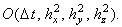
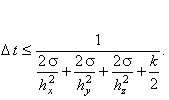
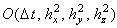
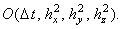
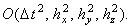

|
В заключение приведём сравнительную характеристику разностных схем,
аппроксимирующих трёхмерное дифференциальное уравнение параболического типа, не содержащее первых
производных по координатам x, y и z:
При записи разностных схем использованы обозначения (9.2).
1. Явная разностная схема
Имеет порядок аппроксимации 
Условно устойчива 
Решается с помощью рекуррентного соотношения (9.6).
2. Схема расщепления
Имеет порядок аппроксимации .
Абсолютно устойчива.
Каждая подсхема решается с помощью метода прогонки.
3. Схема со стабилизирующей поправкой
Имеет порядок аппроксимации 
Абсолютно устойчива.
Каждая подсхема решается с помощью метода прогонки.
4. Схема предиктор-корректор
Имеет порядок аппроксимации 
Абсолютно устойчива.
Каждая из подсхем предиктора решается с помощью метода прогонки;
корректор (четвёртая подсхема) - с помощью рекуррентного соотношения (9.21).
|